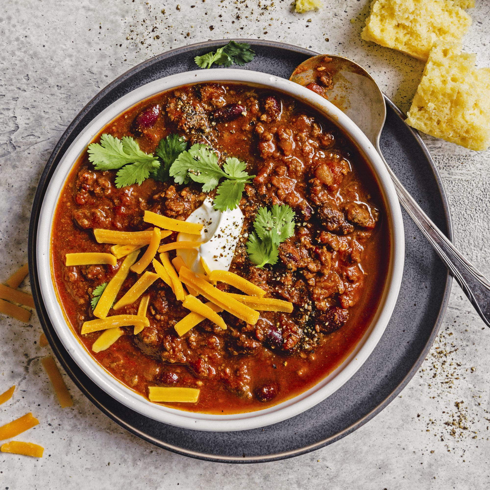

Chipotle Chili

The chipotle peppers give this slow cooker chili a subtle, smoky flavor.
Add more minced chipotle peppers to taste.
Serve with sour cream, sharp Cheddar cheese, and chopped fresh cilantro.
Ingredients
- 1 pound bulk hot Italian sausage
- 2 pounds ground beef
- 5 tablespoons chili powder
- 1 tablespoon ground cumin
- 1 teaspoon ground coriander
- 2 cloves garlic, minced
- 1 large onion, diced
- 1 (28 ounce) can diced tomatoes
- 1 (15 ounce) can tomato sauce
- 1 (14 ounce) can kidney beans (Optional)
- 2 teaspoons minced chipotle peppers in adobo sauce
- 1 teaspoon salt
- ground black pepper
- 1 (6 ounce) can tomato paste
Directions
- Cook sausage and ground beef in a large pot over medium-high heat until lightly browned and crumbly. When the meat has released its grease, and has begun to brown, drain off accumulated grease, and season with chili powder, cumin, and coriander. Cook and stir for 1 minute until fragrant, then stir in the garlic and onion. Cook until the onion has softened and turned translucent, about 4 minutes.
- Stir in the diced tomatoes, tomato sauce, kidney beans, chipotle peppers, salt, and pepper. Bring to a simmer, then pour the chili into a slow cooker. Cover, and cook on Low for 8 to 10 hours. Stir in tomato paste an hour before the chili is done.